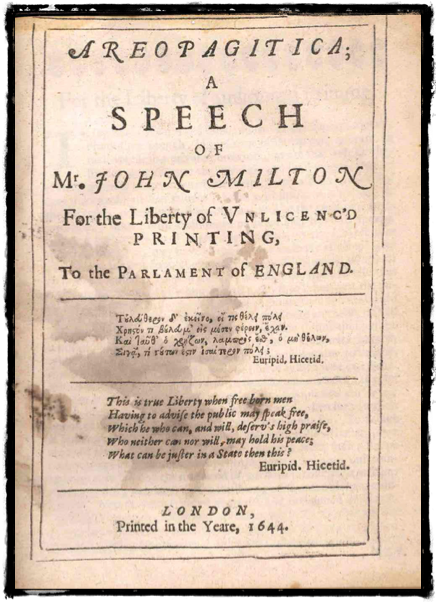

40% Being There
Coming to class prepared is the easiest way to make the course interesting for you and for your classmates. Do it!
Class Attendance and Participation:
The collective experience of the class requires your regular attendance and productive participation in class discussion and group projects.
Students are expected to attend all class meetings and to complete all of a given week’s readings before class on Tuesday. Students should contact me if there are extenuating circumstances preventing their attendance.
Attendance is quantifiable: grade reductions (1 for each missed class) begin after unexcused absence from 3 classes (excused absences are for scheduled university activities and religious observance, and we must have notice of these in advance; illness or emergencies are not excused, but you have the three “freebies”); significant tardiness counts as half an absence.
10%
Angel Discussion Board Postings
Students are expected to participate in weekly online discussions on the course’s Angel website, discussing their thoughts on the readings and class discussions. Here you will be free to discuss topics that do not get raised in class or in the readings. Also, these discussions can form the basis for ideas for the papers.
Topics and the manner of the discussion will be decided by discussion leaders. Each student will take two turns being an online-discussion leader. A given week's discussion leader(s) must write and post at least two paragraphs about the following week’s material by the prior Saturday at midnight. All students must sign up for a week to be a discussion leader by the third week of class.
Discussants (that is, everyone else for that week) must write at least one response to at least one of the discussion leaders by the following Monday at midnight. Responses may be any length five sentences or over. They can respond to any one or all of the discussion leaders for a given week.
Students must participate in discussion boards for ten of the 15 weeks of class (2 postings as discussion leaders and 8 as responders).
Posts for both leaders and discussants are expected to engage with and cite readings, class discussions, and other related material.
10%
In-class Presentation
The presentation will consist of a small research project and in-class oral/visual presentation. The purpose of the presentations is to educate the class on the historical contexts to a given week’s banned text or on topics in banned literature which may be confusing or which may have been touched on only tangentially in class lectures or readings. Handouts and web postings of information (consisting of visual aids, timelines, definitions of terms, and/or annotated bibliographies) are required. Presentations should not exceed ten minutes in length.
All presenters should plan a meeting with me to discuss their topic at least one week prior to their presentation.
All students must sign up for a week to give a presentation by the third week of class.
20%
60% WRITTEN WORK
All WRITTEN WORK is to be submitted to the appropriate dropbox on ANGEL in .doc, .docx., .pages, or .pdf format. As a last resort, if students are unable to submit to Angel, they may email professor Abel copies as attachments.
All papers are individual labors and therefore presenting the work of another as your own will result in a zero for the assignment.
All papers should be in the MLA (Modern Language Association) format.
SHORT ARGUMENT: “AGAINST CENSORSHIP” DUE Oct 14
1-2 pages double spaced.
5%
Mid-term Paper 1 : MID TERM PAPER 1 DUE Oct 2
Short paper discussing one of the works covered in the first third of the semester. Must include work on both banned texts and the historical contexts of their banning. 3-5 pages double-spaced.
15%
SHORT ARGUMENT: “FOR CENSORSHIP” DUE Oct 28
1-2 pages double spaced.
5%
Mid-term Paper 2 : MID TERM PAPER 2 DUE Nov 18
Short paper discussing one of the books covered in the second third of the semester. Must include work on both banned texts and the historical contexts of their banning. 3-5 pages double-spaced.
15%
Final Paper : FINAL PAPER DUE Dec 15
Comparative research paper on the banning of two books from different times and places.
This research paper should include a close analysis and interpretation (not mere summary) of at least two works based on your research about their historical production or reception, a discussion of how the works relate to course readings and sources not used in class.
7-10 pages double-spaced (excluding bibliography).
20%
Bonus Opportunities!!!
1. Read at the reading marathon. 5%
2. Stay and listen to the marathon read. Write a short (2 page) reflective essay on your experience reading and listening. 10%
3. Go to the Film Festival. Write a short essay (2 page) comparing and contrasting one of the films with one of the books they depict or with another book on our syllabus.
10%
Grade
Requirements

Required Texts
Aleksandr Solzhenitsyn One Day in the Life of Ivan Denisovich
Alexander Solzhenitsyn One Day in the Life of Ivan Denisovich Penguin ISBN:9780451228147
Ray Bradbury Fahrenheit 451
Ray Bradbury, Fahrenheit 451 Random House
ISBN: 9780345342966


Late Policy
Every day an assignment is late it will be marked down one grade. If the assignment on time would have been an A, it will become an A- after one day, a B+ after two Days, A B after three days and so on until it will become an f on the ninth day.
Except for extreme cases, There will be no make up exams for the mid-terms. But it is expected that students who happen to miss the exams may make up those points with the ample extra/Bonus point opportunities throughout the semester.
Grading Scale
A 93 and above
A- 90-92
B+ 87-89
B 83-86
B- 80-82
C+ 76-79
C 70-75
D 60-69
F 59 and below
Evaluation Guidelines for Attendance & Participation
90-100 % Student is well prepared, as demonstrated by her/his critical response papers and comments made in class; is interested in and respects others‘ opinions; asks and responds to questions; demonstrates knowledge of course materials; fosters a vibrant intellectual community.
80-89 % Student is generally prepared, makes an effort to refer to readings and course topics; is willing to participate in discussions in class.
70-79 % Student reluctantly participates in class activities and is often unprepared; rarely practices critical thinking; does not demonstrate sufficient knowledge of course materials.
60-69 % Student is unwilling to participate in class activities and unable to ask or answer questions; is generally unprepared; demonstrates little knowledge of course materials.
0-59 % Student is absent (physically or mentally), unprepared, or disruptive in class.
University Policy
Expectations for Classroom Behavior
Civil behaviors are expected in the classroom. Do not use computer for activities unrelated to the class. Do not use your cell phone in class. Penn State Code of Conduct (http://www.sa.psu.edu/ja/conduct.shtml) prohibits "obstruction or disruption of classes‖ (Policy Statement 1). Disruption is defined as ―an action or combination of actions by one or more individuals that unreasonably interferes with, hinders, obstructs, or prevents the operation of the University or infringes on the rights of others to freely participate in its programs and services." Course instructors have the authority to request that a disruptive student leave a class for the remainder of the period. Examples of disruptive behavior include: inappropriate in-class behavior including harassing other students/faculty members, constant interruptions, and the like. Cases of disruptive behaviors will be referred to the Associate Director of Student Affairs for judicial action. Sanctions may include moving the student to another section of the course or administrative removal from the course resulting in a grade of F. Students can direct any questions or concerns they have with the standards of behavior policy to the Associate Director of Judicial Affairs (1-814-863-0342).
Academic Integrity
Dishonesty of any kind will not be tolerated in this course. Dishonesty includes, but is not limited to, cheating, plagiarizing, fabricating information, facilitating acts of academic dishonesty by others, having unauthorized possession of exams, submitting work of another person or work previously used without informing the instructor, or tampering with the academic work of other students. Students who are found to be dishonest will receive academic sanctions and will be reported to the University‘s Judicial Affairs office for possible further disciplinary sanctions. Penn State defines academic integrity as the pursuit of scholarly activity in an open, honest and responsible manner. All students should act with personal integrity, respect other students‘ dignity, rights and property, and help create and maintain an environment in which all can succeed through the fruits of their efforts (Faculty Senate Policy 49-20). Possible academic sanctions include reduced course grade to F for course. In addition, there are disciplinary sanctions that may include the XF grade and permanent expulsion.
In this class group work is tolerated for the in class presentation. All other work is individual work.
Access Statement
The Penn State University encourages qualified students with disabilities to participate in its programs and activities. If you anticipate needing any kind of accommodation in this course or have any questions about physical access, please tell the instructor as soon as possible. For more information, visit: http://www.equity.psu.edu/ods/student/confidential_release.asp
Registration Policy
During the drop/add period at the beginning of the semester, the Department of Comparative Literature encourages students to visit all courses in order to make an informative judgment about which ones to take. After the first week, however, only students registered in the course may remain. Any late-add (or reenrollment of a dropped registration) after the third week of the semester has to be petitioned to the department on a form available in the office, 427 Burrowes.
Choice of Required Texts
You need to choose one of the following Satanic Verses or The Last Temptation of Christ
Salman Rushdie The Satanic Verses Picador ISBN:9780312270827
Nikos Kazantzakis, The Last Temptation of Christ Touchstone ISBN: 9780684852560
AND You need to choose one of the following Brave New World or Handmaid’s Tale
Aldous Huxley, Brave New World and Brave New World Revisited HarperCollins Publishers ISBN: 9780060776091
Margaret Atwood The Handmaid's Tale Knopf Doubleday Publishing ISBN: 9780385490818
Students may purchase books from the U Bookstore or any bookseller of their choice. Economically savvy students are encouraged to purchase from used book sellers online.
60% Written Work
“Against Censorship” 5%
MidTerm Paper 1 15%
“For Censorship” 5%
MidTerm Paper 2 15%
Final Paper 20%
25% Bonus
Marathon Read 5%
Marathon Reflection Essay 10%
Film Festival Essay 10%
The World of Banned Books
2014